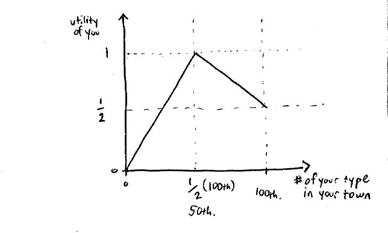

Lecture 8
这节最重要的结论就是随机分配居然要比主动选择好！
终于解决了我心中多年的一些困惑。
Location model
有两个镇子：E, W， 每个镇子能够居住10w人。
有两种人：T, S，每个种类有10w人。
大家都要选择自己是居住E还是W。
大家都同时进行选择，并且一旦某个镇子选择的人数超过限制，那么就随机进行分配。
payoffs:

横轴表示和自己是在居住的镇子中，同一类的人数。
如果镇子中都是同一类人，那么收益就是1/2。如果是均等混合居住，那么收益最大。
最终的趋向就是，矮子都会在一个镇子，而高个子都在另外一个镇子中。这种现象是种族隔离现象。
纳什均衡点：
- 大家完全分开居住。是稳定的。
大家完全按照50%的比例进行混合居住。这是一种weak NE。并且这种纳什均衡是不稳定的，一旦镇子中有了变动，那么将会向另外一种纳什均衡移动。
所有人都选择一个镇子，然后进行随机分配。(lesson: 社会随机分配其结果要比主动选择好。多说一点，我居然找到我大学喜欢随机分配宿舍的理论解释了！太强大了！)
tipping point:一开始在一个纳什均衡点（50%-50%的状态），一旦有微小的变化，那么就会向另外一个纳什均衡点移动。
- 看似人们为了自己的利益，最终形成种族隔离。但是这样并不能推出人们更偏向于种族隔离（美国政治正确orz，实际上人们就是更偏向于种族隔离的）。
- 为了解决上面的问题，国家出台了一些政策：比如随机化，大家一起坐校车。
- 除了一种从上而下的随机，还有一种自下而上的随机，都是达到随机的目的。-> randomized or mixed strategy
例子
| 剪刀石头布游戏 | R | S | P |
|---|---|---|---|
| R | 0, 0 | 1, -1 | -1, 1 |
| S | -1, 1 | 0, 0 | 1, -1 |
| P | 1， -1 | -1， 1 | 0, 0 |
pure strategy = {R, S, P}。
这个博弈中没有pure纳什均衡点。
混合策略的纳什均衡点：(1/3, 1/3, 1/3)的概率进行游戏是纳什均衡点。
如果我出石头，payoff的期望=
同理可以计算出剪刀、布的期望都为0。
因此，该游戏
在纯策略的计算下，这是一个没有纳什均衡的游戏。但是一旦我们引入概率，那么剪刀石头布游戏就是一个有纳什均衡的游戏，这也是一个mixed strategy游戏。